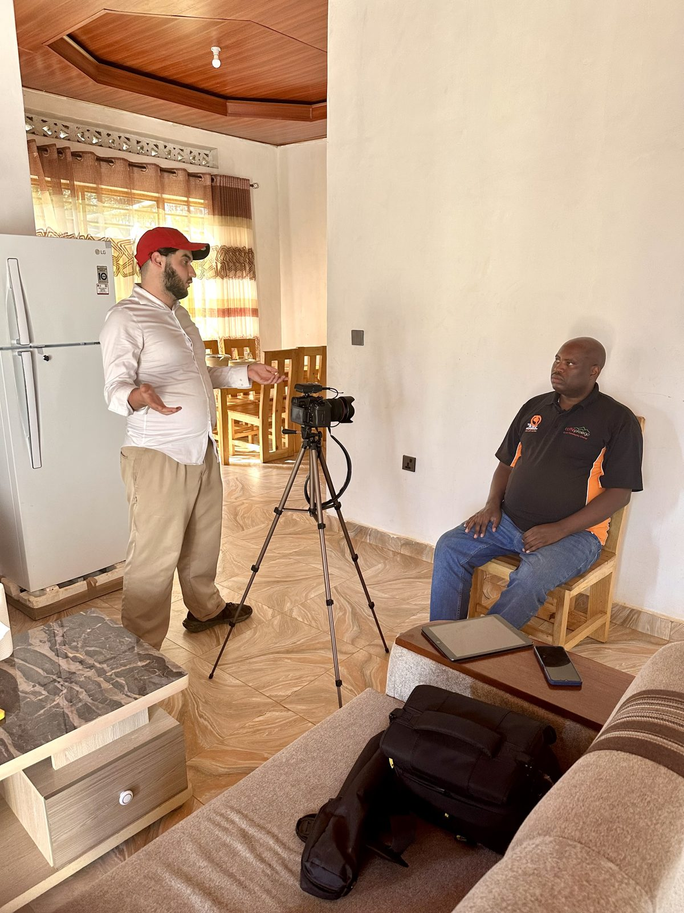

Journalist first. Filmmaker always.
I find the story, then I shoot it. That order matters.
Santa Barbara, California · Judah Brody Productions
I did not come to video through marketing. I came through journalism.
At the Walter Cronkite School at Arizona State, I trained to find the story before I ever pressed record. I covered sports at a national level, NBA, MLB, and college football, where you get one take and the moment does not wait for you. That pressure teaches you to see fast and cut clean.
I have worked beyond the sideline too. A photojournalism immersion in Rwanda taught me that the best footage is usually the most honest, not the most polished. I carry that into every commercial and every event I shoot.
Most local businesses and nonprofits get one of two things: an agency that treats them like a small account, or a freelancer with a camera and no plan. I built Judah Brody Productions to be the third option. Award-level video, FAA-certified drone work, photography, web, and social, all from one person who answers the phone and owns the outcome.
When you hire me, nothing gets lost between vendors. The person who scouts the story is the person who shoots it, edits it, and hands it back ready to publish. That is the whole point.
Off the clock, I am probably watching the game or mapping the next trip. On the clock, I am looking for your story, the part that makes people stop and pay attention.

Santa Barbara, Ventura, San Luis Obispo. Travel available.